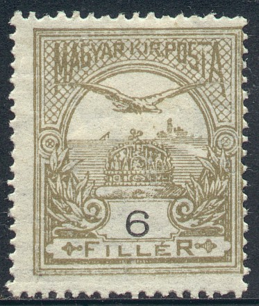
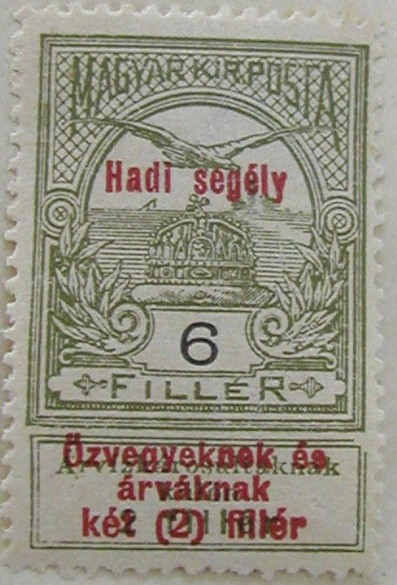

{kind=link}


Hongrie - Ungarn
Return To Catalogue - Hungary - Hungary 1916-1920 - Hungary local overprints of 1919 - Miscellaneous - Western Hungary (Lajtabansag) - Hotel post (Kurhaus Hohen Rinne)
Note: on my website many of the
pictures can not be seen! They are of course present in the
catalogue;
contact me if you want to purchase the catalogue.
For issues of Hungary, before 1900, click here.
1 f grey 2 f yellow 3 f orange 4 f violet 5 f green 6 f lilac 6 f olive (1901) 10 f red 12 f violet (1904) 12 f violet on yellow (1913) 16 f green (1913) 20 f brown 25 f blue 30 f brown 35 f lilac 50 f red 50 f red on blue (1913) 60 f green 60 f green on red (1914) 70 f brown on green (1916) 80 f violet (1916)
Value of the stamps |
|||
vc = very common c = common * = not so common ** = uncommon |
*** = very uncommon R = rare RR = very rare RRR = extremely rare |
||
| Value | Unused | Used | Remarks |
| Watermark 'Crown in a circle', various perforations (1900) | |||
| 1 f | c | c | |
| 2 f | ** | vc | |
| 3 f | * | c | |
| 4 f | * | c | |
| 5 f | ** | vc | |
| 6 f lilac | * | * | |
| 6 f olive | ** | c | |
| 10 f | *** | vc | |
| 12 f violet | *** | * | |
| 20 f | *** | c | |
| 25 f | *** | c | |
| 30 f | R | c | |
| 35 f | *** | c | |
| 50 f red | *** | * | |
| 60 f green | RR | c | |
| Watermark 'Rounded crown' (1905) | |||
| 1 f | * | c | |
| 2 f | * | c | |
| 3 f | ** | c | |
| 5 f | * | c | |
| 6 f olive | * | c | |
| 10 f | ** | c | |
| 12 f violet | ** | c | |
| 20 f | *** | c | |
| 25 f | *** | c | |
| 30 f | *** | c | |
| 35 f | *** | c | |
| 50 f red | *** | * | |
| 60 f green | RR | c | |
| Watermark 'Square Crown' (1909) | |||
| 1 f | c | c | |
| 2 f | * | vc | |
| 3 f | c | c | |
| 5 f | c | vc | |
| 6 f olive | * | vc | |
| 10 f | c | vc | |
| 12 f violet | * | vc | |
| 16 f | * | c | |
| 20 f | *** | c | |
| 25 f | ** | vc | |
| 30 f | ** | vc | |
| 35 f | *** | c | |
| 50 f red | * | c | |
| 60 f green | *** | vc | |
| Watermark 'Crosses' (1913) | |||
| 1 f | c | vc | |
| 2 f | c | vc | |
| 3 f | c | vc | |
| 5 f | c | vc | |
| 6 f olive | c | vc | |
| 10 f | c | vc | |
| 12 f violet on yellow | c | vc | |
| 16 f | c | c | |
| 20 f | c | vc | |
| 25 f | c | vc | |
| 30 f | c | vc | |
| 35 f | c | vc | |
| 50 f red | c | vc | |
| 60 f green | *** | * | |
| 60 f green on red | c | vc | |
| 70 f | c | c | |
| 80 f | c | c | |
With label with inscription 'Arvizkarosultaknak kulon 2 filler' (1913)

1 f + 2 f grey 2 f + 2 f yellow 3 f + 2 f orange 5 f + 2 f green 6 f + 2 f olive 10 f + 2 f red 12 f + 2 f violet on yellow 16 f + 2 f green 20 f + 2 f brown 25 f + 2 f blue 30 f + 2 f brown 35 f + 2 f lilac 50 f + 2 f red on blue 60 f + 2 f green on red
Value of the stamps |
|||
vc = very common c = common * = not so common ** = uncommon |
*** = very uncommon R = rare RR = very rare RRR = extremely rare |
||
| Value | Unused | Used | Remarks |
| Watermark 'Crosses', perforation 14 (1913) | |||
| 1 f | c | c | |
| 2 f | c | c | |
| 3 f | c | c | |
| 5 f | c | c | |
| 6 f | c | c | |
| 10 f | c | vc | |
| 12 f | c | c | |
| 16 f | * | * | |
| 20 f | c | c | |
| 25 f | c | c | |
| 30 f | c | c | |
| 35 f | c | c | |
| 50 f | c | c | |
| 60 f | c | c | |
Flood charity with label, overprinted in red (except for 10 f) 'Hadl segely ozvegyeknek es arvaknak ket (2) filler' (1914)

(Images obtained thanks to Sandra de Marchena)
1 f + 2 f grey 2 f + 2 f yellow 3 f + 2 f orange 5 f + 2 f green 6 f + 2 f olive 10 f + 2 f red 12 f + 2 f violet on yellow 16 f + 2 f green 20 f + 2 f brown 25 f + 2 f blue 30 f + 2 f brown 35 f + 2 f lilac 50 f + 2 f red on blue 60 f + 2 f green on red
Value of the stamps |
|||
vc = very common c = common * = not so common ** = uncommon |
*** = very uncommon R = rare RR = very rare RRR = extremely rare |
||
| Value | Unused | Used | Remarks |
| Watermark 'Crosses', perforation 14 (1914) | |||
| 1 f | c | c | |
| 2 f | c | c | |
| 3 f | c | c | |
| 5 f | c | c | |
| 6 f | * | * | |
| 10 f | c | c | |
| 12 f | * | * | |
| 16 f | * | * | |
| 20 f | * | * | |
| 25 f | * | * | |
| 30 f | * | * | |
| 35 f | * | * | |
| 50 f | * | * | |
| 60 f | * | * | |
Flood charity without label, overprinted in red (except for 10 f) 'Hadi segely ozvegyeknek es arvaknak ket (2) filler' (1914)
1 f + 2 f grey 2 f + 2 f yellow 3 f + 2 f orange 5 f + 2 f green 6 f + 2 f olive 10 f + 2 f red 12 f + 2 f violet on yellow 16 f + 2 f green 20 f + 2 f brown 25 f + 2 f blue 30 f + 2 f brown 35 f + 2 f lilac 50 f + 2 f red on blue 60 f + 2 f green on red
Value of the stamps |
|||
vc = very common c = common * = not so common ** = uncommon |
*** = very uncommon R = rare RR = very rare RRR = extremely rare |
||
| Value | Unused | Used | Remarks |
| Watermark 'Crosses', perforation 14 (1915) | |||
| 1 f | c | c | |
| 2 f | vc | vc | |
| 3 f | vc | vc | |
| 5 f | vc | vc | |
| 6 f | c | c | |
| 10 f | c | vc | |
| 12 f | c | c | |
| 16 f | c | c | |
| 20 f | * | c | |
| 25 f | c | c | |
| 30 f | c | c | |
| 35 f | c | c | |
| 50 f | c | c | |
| 60 f | c | c | |
One of the watermarks of this issue, crosses:
These stamps exist with various local overprint, issued in 1919.

1 K red 2 K blue 3 K green 5 K lilac
Value of the stamps |
|||
vc = very common c = common * = not so common ** = uncommon |
*** = very uncommon R = rare RR = very rare RRR = extremely rare |
||
| Value | Unused | Used | Remarks |
| Watermark 'Crown in a circle', various perforations (1900) | |||
| 1 K | RR | c | |
| 2 K | RR | *** | |
| 3 K | RR | ** | |
| 5 K | RR | *** | |
| Watermark 'Rounded crown' (1905) | |||
| 1 K | RR | c | |
| 2 K | RR | *** | |
| Watermark 'Square Crown' (1909) | |||
| 1 K | *** | vc | |
| 2 K | RR | c | |
| 5 K | RR | * | |
| Watermark 'Crosses' (1913) | |||
| 1 K | c | vc | |
| 2 K | * | c | |
| 5 K | ** | * | |
Flood Charity bird, label with inscription 'Arvizkarosultaknak kulon 2 filler' (1913)
1 K + 2 f red 2 K + 2 f blue 5 K + 2 f lilac
Value of the stamps |
|||
vc = very common c = common * = not so common ** = uncommon |
*** = very uncommon R = rare RR = very rare RRR = extremely rare |
||
| Value | Unused | Used | Remarks |
| Watermark 'Crosses', perforation 14 (1913) | |||
| 1 K | * | * | |
| 2 K | *** | *** | |
| 5 K | *** | *** | |
Flood charity with label, overprinted in red 'Hadi segely ozvegyeknek es arvaknak ket (2) filler' (1914)
1 K + 2 f red 2 K + 2 f blue 5 K + 2 f lilac
Value of the stamps |
|||
vc = very common c = common * = not so common ** = uncommon |
*** = very uncommon R = rare RR = very rare RRR = extremely rare |
||
| Value | Unused | Used | Remarks |
| Watermark 'Crosses', perforation 14 (1914) | |||
| 1 K | *** | *** | |
| 2 K | *** | *** | |
| 5 K | *** | *** | |
Flood charity without label, overprinted in red 'Hadi segely ozvegyeknek es arvaknak ket (2) filler' (1915)
1 K + 2 f red 2 K + 2 f blue 5 K + 2 f lilac
Value of the stamps |
|||
vc = very common c = common * = not so common ** = uncommon |
*** = very uncommon R = rare RR = very rare RRR = extremely rare |
||
| Value | Unused | Used | Remarks |
| Watermark 'Crosses', perforation 14 (1915) | |||
| 1 K | * | * | |
| 2 K | * | * | |
| 5 K | ** | ** | |
For issues of Hungary from 1916 to 1920 click here.
{kind=link}
{kind=link}